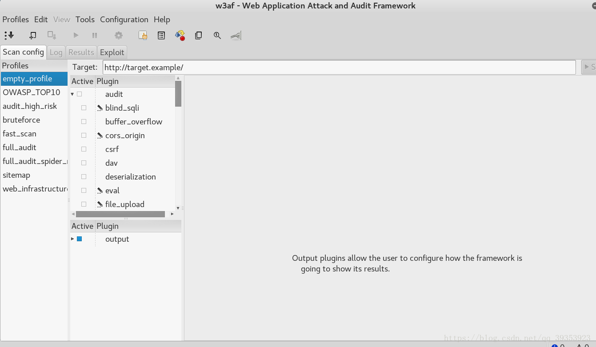

实验环境:
Kali:192.168.128.128
Metasploitable:192.168.128.129
安装W3af:简介及安装w3af文档
w3af用户接口:
- console命令行接口
- Gui图形界面化接口
- API接口
开始操作
1 | root@kali:~/w3af-master# ./w3af_console |
1 | w3af>>> plugins #输入plugins,进入插件目录的内, |
也可以在图形界面化直观的看清其结构
1
2
3
4
5
6
7
8
9
10
11#使用audit模块中的xss脚本攻击,sql注入,本地文件调用这三个插件,可以选用一个,也可以选用多个
#那么再次列出时这些插件的Status将会变成Enabled,如果进行扫描,那么就会针对这些漏洞去扫描
w3af/plugins>>> audit xss sqli lfi
#使用audit模块中的所有插件进行扫描
w3af/plugins>>> audit all
#输入crawl模块,按两次tab键,可以显示该模块下的插件
w3af/plugins>>> crawl
genexus_xml wordpress_fingerprint dot_listing content_negotiation robots_txt archive_dot_org ria_enumerator wordnet user_dir sitemap_xml bing_spider dir_file_bruter phpinfo find_dvcs import_results urllist_txt google_spider url_fuzzer find_backdoors web_spider spider_man find_captchas oracle_discovery wsdl_finder wordpress_enumerate_users web_diff dwsync_xml pykto wordpress_fullpathdisclosure phishtank digit_sum open_api dot_ds_store ghdb all config desc
w3af/plugins>>> crawl web_spider #选择该模块下的web爬虫模块
1 | w3af>>> profiles #进入profiles模块,这个模块用于自定义组合插件,当然w3af自定义了一些组合插件 |
也可以使用w3af中集成的脚本去进行扫描1
2
3
4
5
6
7
8
9
10
11
12
13
14
15
16
17
18
19
20
21
22
23
24
25
26
27
28
29root@kali:~/w3af-master# cd scripts/
root@kali:~/w3af-master/scripts# ls
allowed_methods.w3af login_brute_form_GET.w3af
all.w3af login_brute_password_only.w3af
auth_detailed.w3af mangle_request.w3af
bing_spider.w3af mangle_response.w3af
blind_sqli_detection.w3af os_commanding-lnx-vdaemon.w3af
cookie_fuzzing.w3af os_commanding-lnx-w3afAgent.w3af
cross_domain.w3af os_commanding_shell.w3af
csrf.w3af os_commanding.w3af
dav_shell.w3af php_sca-payload.w3af
detect_transparent_proxy.w3af profile-fast_scan.w3af
digit_sum.w3af remote_file_include_local_ws.w3af
dvwa.w3af remote_file_include_proxy.w3af
eval_shell.w3af remote_file_include_shell.w3af
eval.w3af remote_file_include_shell-xss.w3af
exploit_all.w3af remote_file_include_w3af_site.w3af
exploit_fast.w3af spider_man.w3af
filename_xss.w3af sqli.w3af
file_upload_shell.w3af sqlmap_exploit_int.w3af
frontpage_version.w3af targets_from_file.w3af
header_fuzzing.w3af web_spider-ignore_regex.w3af
html_output.w3af web_spider-only_forward.w3af
list_all_plugins.w3af web_spider.w3af
local_file_include-payload.w3af xss_simple.w3af
local_file_include.w3af xss_stored.w3af
#参数-s表示指定具体的脚本去进行扫描,但需要首先去进入该脚本进行配置目标信息,然后调用w3af的console接口去扫描是否存在sql注入
root@kali:~/w3af-master# ./w3af_console -s scripts/sqli.w3af